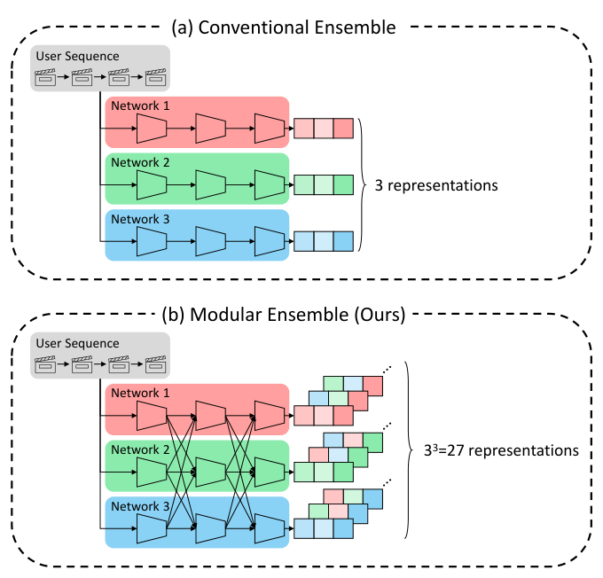
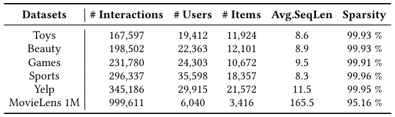
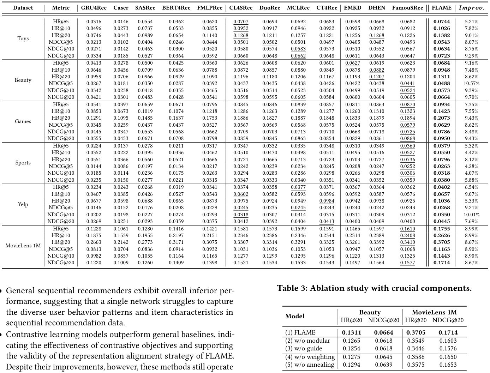
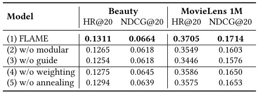
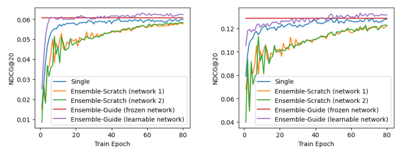
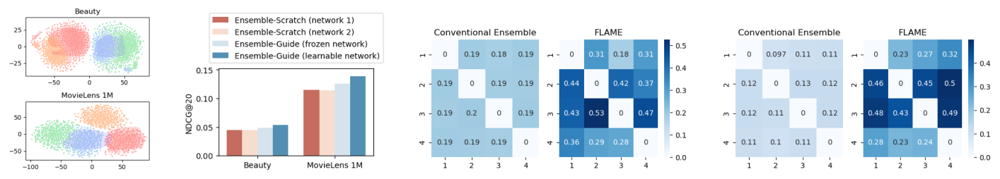
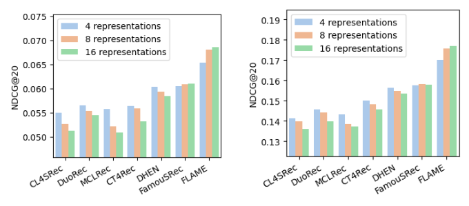

FLAME: Condensing Ensemble Diversity into a Single Network for Efficient Sequential Recommendation (将集成多样性浓缩进单一网络的高效序列推荐)
- 会议/期刊: SIGIR 2026 (Full Papers Track)
- 推荐链路定位: 召回 (Retrieval) / 端到端序列打分 (Next-Item Prediction)
- 研究方向: 序列与会话推荐 / 自监督对比学习
- 论文原文: https://arxiv.org/abs/2604.04038v3
- 开源代码: https://github.com/woo-joo/FLAME_SIGIR26
TL;DR (核心速览)
针对序列推荐中单网络难以刻画多样用户行为、而传统多网络集成训练昂贵且互监督噪声导致训练不稳的痛点，FLAME 提出"冻结网络 + 可学习网络"的模块化集成：将每个网络拆为 \(M\) 个子模块并交叉组合，用仅 2 个网络模拟 \(2^M\) 条表征路径，再以冻结网络为语义锚做引导式互学习对齐。推理时仅保留可学习网络，零额外开销。在 6 个数据集、Leave-One-Out + Full-Ranking 协议下，NDCG@20 最高相对提升 9.70%，收敛速度最高快 7.69 倍。
Background & Motivation (背景与动机)
- 领域背景与主流范式: 序列推荐（Next-Item Prediction）主流以 SASRec/BERT4Rec 等单网络 Transformer 为主；为刻画用户序列中短期兴趣、长期偏好、口味漂移等多面模式，近期出现集成式方法（EMKD、SEM、FamouSRec），通过并行训练多个网络并施加互知识迁移（对比学习 + 知识蒸馏）来获取互补表征。
- 现有方法局限 (Limitations of Prior Work):
- 计算低效：集成预测需前向每个网络并聚合输出，训练与推理成本是单网络的数倍，难以服务实时场景。
- 训练不稳：所有网络从零开始 + 互监督，在早期无任何网络具备可靠先验时，互监督实为噪声，优化剧烈震荡。作者实测现有集成方法收敛所需时间最长可达单网络的 2.94 倍（图 1）。
- 核心挑战 (Key Challenge): 简单增加网络深度或堆叠常规对比学习无法解决——单网络内部视图增广的多样性有限（图 5 显示对比学习基线增加视图数反而退化），而异构集成（DHEN/FamouSRec）依赖架构差异获取多样性，结构约束阻碍知识共享，扩展性差。
- 核心洞察与切入点 (Key Insight): 两条先验观察：(1) 单网络内部不同子模块（embedding 层、浅层编码器、深层编码器）天然捕获不同粒度模式，因此子模块组合即可产生指数级多样表征，无需真的建多个网络；(2) 预训练并冻结一个网络作为稳定语义锚，可显著提升其余可学习网络的训练稳定性与最终性能（图 1 的 Ensemble-Guide 曲线优于 Single 与 Ensemble-Scratch）。图 3(a) 的 t-SNE 进一步证实：2 网络 × 2 子模块的模块化集成产生 4 类表征簇，而传统 2 网络集成仅 2 类。
Problem Formulation & Method (问题定义与方法架构)
1. 符号定义与输入表征 (Notations & Input Representations)
- 用户集 \(\mathcal{U}\)、物品集 \(\mathcal{I}\)；用户 \(u\) 的历史序列 \(s_u=[i_{u,1},\dots,i_{u,|s_u|}]\)，目标是 \(\arg\max_{i\in\mathcal{I}} p(i_{u,|s_u|+1}=i\mid s_u)\)。
- 序列截断/补零至最大长度 \(T\)；物品嵌入矩阵 \(I\in\mathbb{R}^{|\mathcal{I}|\times d}\)，位置嵌入矩阵 \(P\in\mathbb{R}^{T\times d}\)，序列嵌入 \(e_u=[I_{i_{u,1}}+P_1,\dots,I_{i_{u,T}}+P_T]\in\mathbb{R}^{T\times d}\)。
- 编码器为 \(L\) 层多头 Transformer，第 \(l\) 层输出 \(H_u^l=\mathrm{Trm}^l(H_u^{l-1})\in\mathbb{R}^{T\times d}\)，取末层末位置 \(h_u=h_u^L,T\in\mathbb{R}^d\) 作为序列表征。
- 默认超参：\(d=64\)，\(T=50\)，\(L=2\)，2 个注意力头，dropout 0.5。
2. 整体流水线 (Overall Architecture)
FLAME 由两个同构 SASRec 网络构成：预训练后冻结的 \(f^{frz}(\cdot)\) 与从零训练的可学习网络 \(f^{lrn}(\cdot)\)，每个网络拆为 \(M\) 个子模块（默认 \(M=2\)：embedding 模块 + 序列编码模块）。训练时对每条序列枚举 \(2^M\) 条"冻结/可学习"子模块混合路径生成多样表征，经相似度加权对比损失对齐到统一语义空间，同时可学习网络做下一项预测；推理时仅前向可学习网络。
flowchart TD
A["输入层: 用户序列 s_u → 物品/位置嵌入"] --> B["模块化集成: 冻结网络 f_frz 与可学习网络 f_lrn 各拆为 M 个子模块"]
B --> C["2^M 条混合路径生成多样表征 h̃_u^p"]
B --> D["可学习网络完整前向 h_u^lrn"]
C --> E["相似度加权对比对齐 L_mkt (冻结网络作语义锚)"]
D --> F["下一项预测 L_rec"]
E --> G["联合优化 L = L_rec + λ(r)·L_mkt, λ 指数退火"]
F --> G
G --> H["推理: 仅用可学习网络 Softmax(h_u^lrn · I^T)"]

3. 核心模块设计与数学原理 (Key Designs & Formulations)
(1) 模块化集成 (Modular Ensemble)：设 \(f^{(i)}_{frz}(\cdot)\)、\(f^{(i)}_{lrn}(\cdot)\) 为两网络第 \(i\) 个子模块。对路径 \(p=(p_1,\dots,p_M)\in\mathcal{P}=\{frz,lrn\}^M\)，定义混合表征
物理直觉：不同子模块捕获不同粒度信号（embedding 层=静态物品语义，浅层=局部物品级信号，深层=时间平滑的用户偏好），因此路径组合等价于从多个"视角"解读同一序列，以 2 个网络的参数获得 \(2^M\) 个表征——2 网络 × 3 子模块即可模拟 8 网络传统集成。
(2) 相似度加权引导式互学习 (Guided Mutual Learning with Similarity Weighting)：将同一用户序列的不同路径表征视为正对、同 batch 内其他用户表征为负对，做 pairwise InfoNCE：
关键修正：共享子模块越多的路径对天然越相似，若等权处理会让这些"结构近邻对"主导损失。故按 batch 平均相似度 \(sim_{p,q}=\frac{1}{|\mathcal{B}|}\sum_{s_u\in\mathcal{B}}\tilde{h}_u^p\cdot\tilde{h}_u^q\) 计算权重
即对越相似的对降权，实现更均衡的优化。冻结网络在此充当稳定语义锚，把多样表征拉入可学习网络的语义空间。
(3) 联合优化与系数退火：可学习网络同时做下一项预测 \(\hat{y}_u=\mathrm{Softmax}(h_u^{lrn}(I^{lrn})^\top)\)，\(\mathcal{L}_{rec}(u)=-\log\hat{y}_u[g_u]\)；总损失
\(\lambda\) 从 \(\lambda_0\) 指数退火至 \(\lambda_R=10^{-5}\)，避免可学习网络过度拟合冻结网络的表征空间，后期转向自身任务表征质量。
4. 训练目标、负采样与推理复杂度 (Optimization, Negative Sampling & Complexity)
- 损失函数: 上述 \(\mathcal{L}_{rec}\)（交叉熵式下一项预测）+ \(\lambda(r)\mathcal{L}_{mkt}\)（相似度加权 pairwise InfoNCE，温度 \(\tau\in\{0.1,0.5,1,5,10\}\) 调参，\(\lambda_0\in\{10^{-4},\dots,10^0\}\)）。
- 训练负采样策略: 无显式负采样；对比损失采用 In-batch 负采样（同 mini-batch 内其他用户序列表征为负），batch size 256；主任务为全库 Softmax 交叉熵（免负采样）。
- 时间与空间复杂度: 训练阶段需前向 \(2^M\) 条路径（默认 \(M=2\) 即 4 条），参数量为 2 个 SASRec（Beauty 上 1.67M vs 单 SASRec 0.84M）；推理仅前向可学习网络，参数量与延迟与单 SASRec 完全一致（Beauty 1.30s、MovieLens 1M 0.16s 推理耗时，见表 4），比 EMKD/DHEN/FamouSRec 等集成低至 6.75 倍延迟。\(M\) 从 2 增至 7 时训练时间显著上升而收益在 \(M>4\) 后边际递减（图 6）。
Experimental Setup & Evaluation Protocol (实验设置与评估协议)
- 数据集统计与预处理: 6 个公开数据集，全部按 5-core 过滤（用户与物品交互数 < 5 剔除），全部交互视为隐式反馈正样本；Yelp 取 2020-01-01 之后交互，MovieLens 采用 1M 版本。

| 数据集 (Dataset) | 用户数 (#Users) | 物品数 (#Items) | 交互数 (#Interactions) | 平均序列长 (Avg.SeqLen) | 稀疏度 (Sparsity) |
|---|---|---|---|---|---|
| Toys | 19,412 | 11,924 | 167,597 | 8.6 | 99.93% |
| Beauty | 22,363 | 12,101 | 198,502 | 8.9 | 99.93% |
| Games | 24,303 | 10,672 | 231,780 | 9.5 | 99.91% |
| Sports | 35,598 | 18,357 | 296,337 | 8.3 | 99.96% |
| Yelp | 29,915 | 21,572 | 345,186 | 11.5 | 99.95% |
| MovieLens 1M | 6,040 | 3,416 | 999,611 | 165.5 | 95.16% |
- 数据划分方式 (Splitting Strategy): 标准 Leave-One-Out (留一法)——每个用户序列最后一项作测试、倒数第二项作验证。该协议为序列推荐社区惯例，但需注意其"未来信息"边界：验证/测试项严格位于序列末端，训练仅用前缀，无穿越；不过 LOO 对长序列用户（如 ML-1M 平均 165.5）仅评估单一目标，方差较大。
- 排名评测协议 (Ranking Protocol): Full-Ranking（全库未交互物品排序，无负采样），与 DuoRec 等保持一致，评估公平性较好。
- 评价指标与显著性检验: HR@{5,10,20}、NDCG@{5,10,20}；所有模型 embedding 维度 \(d=64\) 对齐；训练 200 epoch、Adam、lr=0.001、batch=256、基于验证 NDCG@20 的 early stopping（patience=30），单卡 RTX 3090。原文未报告多随机种子方差与配对显著性检验（如 \(t\)-test / Wilcoxon），此为评估严谨性上的短板。
Key Experimental Results (核心实验结果)
1. 主实验对比 (Main Results)

| 数据集 | 指标 | 单网络最强基线 (SASRec/BERT4Rec) | 对比学习/集成最强基线 (CL4SRec/DuoRec/FamouSRec) | 本文方法 (FLAME) | 相对提升 (Improv.) |
|---|---|---|---|---|---|
| Toys | HR@20 / NDCG@20 | 0.0989 / 0.0527 | 0.1268 (CL4SRec/DHEN) / 0.0662 (MCLRec) | 0.1382 / 0.0723 | +9.01% / +9.29% |
| Beauty | HR@20 / NDCG@20 | 0.0966 / 0.0483 | 0.1207 (DHEN) / 0.0605 (MCLRec/FamouSRec) | 0.1311 / 0.0664 | +8.62% / +9.70% |
| Games | HR@20 / NDCG@20 | 0.1637 / 0.0708 | 0.1894 (FamouSRec) / 0.0868 (FamouSRec) | 0.2073 / 0.0950 | +9.43% / +9.43% |
| Sports | HR@20 / NDCG@20 | 0.0560 / 0.0277 | 0.0736 (FamouSRec) / 0.0359 (FamouSRec) | 0.0796 / 0.0380 | +8.12% / +5.88% |
| Yelp | HR@20 / NDCG@20 | 0.0865 / 0.0359 | 0.0984 (CT4Rec) / 0.0413 (CT4Rec) | 0.1036 / 0.0445 | +5.33% / +7.69% |
| MovieLens 1M | HR@20 / NDCG@20 | 0.3171 / 0.1409 | 0.3410 (FamouSRec) / 0.1577 (FamouSRec) | 0.3705 / 0.1714 | +8.67% / +8.67% |
整体相对提升区间 4.07%–10.57%，全数据集全指标一致最优。作者归纳三点：(i) 单网络通用序列模型整体偏弱，说明单网络难捕获多样行为；(ii) 对比学习模型优于通用基线，验证表征对齐思路有效，但受限于单网络范式；(iii) 集成类（FamouSRec）虽强但训练不稳，FLAME 以冻结锚 + 模块化集成同时兼顾多样性与稳定性。
2. 消融实验与控制变量分析 (Ablation Study)

| 变体 | Beauty HR@20 | Beauty NDCG@20 | ML-1M HR@20 | ML-1M NDCG@20 |
|---|---|---|---|---|
| (1) FLAME 完整模型 | 0.1311 | 0.0664 | 0.3705 | 0.1714 |
| (2) w/o modular（传统集成） | 0.1265 | 0.0618 | 0.3549 | 0.1603 |
| (3) w/o guide（双网络从零训练） | 0.1254 | 0.0618 | 0.3446 | 0.1576 |
| (4) w/o weighting（等权 \(\mathcal{L}_{cl}\)） | 0.1275 | 0.0645 | 0.3586 | 0.1650 |
| (5) w/o annealing（常数 \(\lambda\)） | 0.1294 | 0.0639 | 0.3575 | 0.1653 |
移除模块化集成或引导式互学习造成最大降幅（最高 8.76%，ML-1M NDCG@20 从 0.1714 降至 0.1576），二者是核心贡献；相似度加权与系数退火各贡献约 2–4% 的 NDCG@20。需指出：消融未严格对齐参数量（w/o modular 与 w/o guide 的参数量配置与完整模型不同），控制变量严谨度有提升空间。
3. 稀疏度/冷启动分桶与超参敏感度 (Sparsity Buckets & Hyperparameters)
- 交互频次分桶: 原文未报告按用户/物品交互频次分桶的长尾分析，也未单独报告冷启动用户子群表现。
- 关键超参数敏感度: (i) 子模块数 \(M\)：\(M\) 从 2 增至 7 训练时间显著上升，\(M>4\) 后收益边际递减，默认 \(M=2\) 为最佳性价比（图 6）；(ii) 表征数（\(L=1,2,3\) 对应 4/8/16 个表征）：FLAME 随表征数增加持续提升（最高 +4.74%），而对比学习基线增加视图反而退化、异构集成扩展性差（图 5）；(iii) 温度 \(\tau\) 与初始系数 \(\lambda_0\) 在宽范围内性能稳定（图 9）。
- 冻结网络鲁棒性: FLAME 可跨 GRU4Rec/Caser/FMLPRec/SASRec 四种骨干一致提升；\(d=32\) 时 FLAME-32 追平 FLAME-64（对弱教师鲁棒），\(d=128\) 时 FLAME-128 仍较 FLAME-64 明显提升（图 7）。
- 效率与稳定性: 表 4 显示 FLAME 以 1.67M 参数（Beauty）达到 NDCG@20=0.0660，优于 4.76M 参数的 EMKD（0.0600）与 2.30M 的 FamouSRec（0.0605），推理延迟 1.30s 与单 SASRec 持平；收敛速度比其它集成基线快 4.55–7.69 倍（图 8）。
- 线上 A/B 测试: 原文仅包含离线实验，未报告线上 A/B 结果。



Highlights, Limitations & Critiques (亮点、局限与审稿级批判)
- 核心亮点与可迁移性:
- "子模块组合即集成"的算子思想极具普适性：任何具备可分解模块结构的推荐骨干（图/序列/多模态编码器）都可用 \(2^M\) 路径枚举 + 相似度加权对比对齐来低成本模拟集成多样性，且推理零开销，对工业实时系统友好。
- 冻结锚 + 退火互学习为"自蒸馏式稳定训练"提供了序列推荐场景的实证支撑（图 1、图 3b），可迁移到其他易受互监督噪声困扰的多视图/多任务训练。
- 相似度加权对比损失针对"结构近邻对主导损失"的失衡问题给出简洁闭式修正，可复用于任意多视图对比框架。
- 局限性与审稿视角批判 (Critical Limitations):
- 评估协议: LOO + 单目标评估方差大，且未报告多随机种子均值/方差与配对显著性检验，"一致最优"的统计可信度需补强；未做时间戳全局切分，无法排除 LOO 在长序列数据集上的乐观偏差。
- 消融控制不严: w/o modular、w/o guide 变体与完整模型的参数量/计算预算未对齐，性能下降中可能混入容量差异的混淆效应。
- 缺失关键分析: 无长尾/冷启动分桶、无线上 A/B、无与"同参数量单网络 + 更强正则"的严格对照；\(M\) 增大时对齐 \(2^M\) 表征的训练开销与显存峰值原文未量化。
- 理论深度: "子模块捕获不同粒度模式"主要靠 t-SNE 与 PER 的经验证据支撑，缺乏对多样性—可靠性权衡的形式化分析；\(2^M\) 路径中有一条纯冻结路径（不参与可学习网络梯度），其对最终单网络表征的贡献未被单独讨论。
- 可扩展性边界: 默认 \(M=2\) 仅 4 条路径，与"指数级集成"的叙事存在张力；\(M>4\) 收益递减说明对齐难度成为瓶颈，未来 elastic inference 的设想尚停留在展望。
Rating (四维评分)
- 方法创新性 (Novelty): ⭐⭐⭐⭐
- 评估协议与实验扎实度 (Protocol & Experiments): ⭐⭐⭐
- 写作与数学规范度 (Clarity & Rigor): ⭐⭐⭐⭐
- 工业落地与复现价值 (Industrial & Practical Value): ⭐⭐⭐⭐⭐